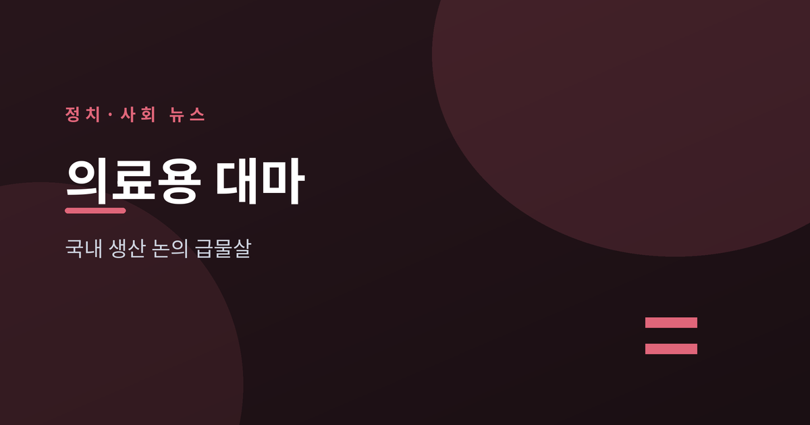
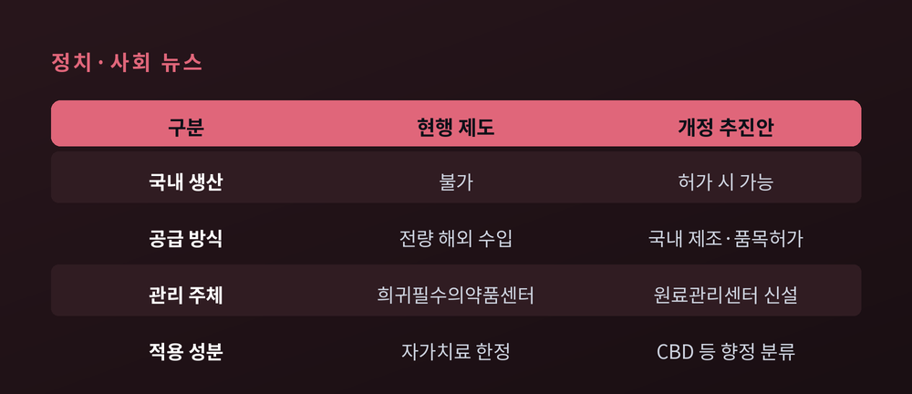
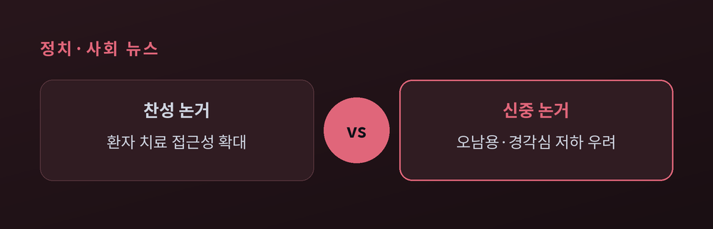
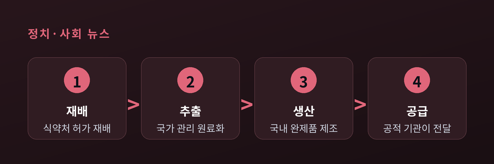
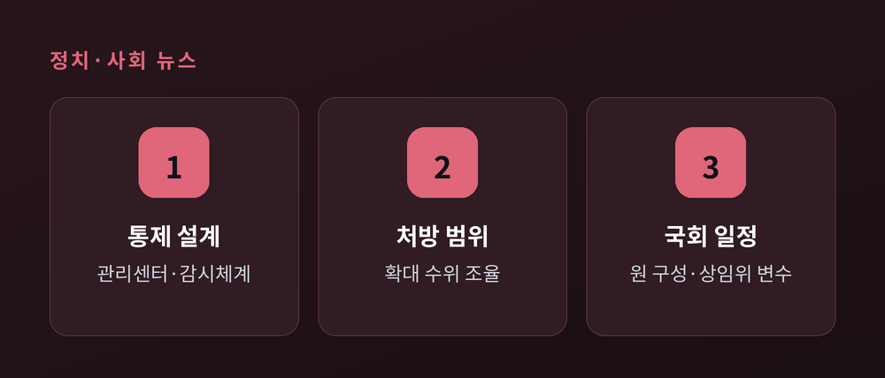

무엇이 바뀌고 무엇이 쟁점인가

이번 글에서는 2026년 7월 국회에서 오간 '의료용 대마 성분 의약품' 도입 논의를 정리해 보겠습니다. 무슨 일이 있었는지, 왜 쟁점이 되는지, 앞으로 어떻게 흘러갈지를 한 번에 짚어 드립니다. 정치·사회 사안인 만큼 특정 입장을 편들기보다, 찬성과 신중 양쪽의 목소리를 함께 전하는 데 무게를 두었습니다.
먼저 용어부터 정리하겠습니다. 여기서 말하는 '의료용 대마'는 기호용(오락용) 대마의 전면 합법화와는 다른 이야기입니다. 대마에는 여러 성분이 섞여 있는데, 이번 논의의 중심은 그중에서도 뇌전증 같은 질환 치료에 쓰이는 성분, 특히 환각 작용이 없는 칸나비디올(CBD)입니다. 반대로 중독성과 향정신성이 문제되는 성분은 THC로, 두 성분은 성격이 전혀 다릅니다. 이 구분을 먼저 머리에 담아 두면 뒤의 쟁점이 한결 또렷해집니다.
2026년 7월 6일, 국민의힘 김형동 의원이 '마약류 관리에 관한 법률', 이른바 마약류관리법 개정안을 대표발의했습니다. 내용의 핵심은 크게 두 갈래입니다.
첫째, 치료 목적으로 쓰는 대마 성분인 칸나비디올(CBD) 등을 '향정신성의약품'으로 분류합니다. 얼핏 규제를 강화하는 말처럼 들리지만, 실제 효과는 반대에 가깝습니다. 지금은 대마 성분이 '마약류인 대마'로 묶여 국내에서 의약품 원료로 다루기가 막혀 있습니다. 이를 '향정'으로 재분류하면, 엄격한 관리 아래에서나마 이 성분을 원료로 한 의약품을 국내에서 제조하고 품목허가를 받을 법적 근거가 생깁니다.
둘째, '의료용 마약류 원료관리센터'를 설치·운영할 근거를 새로 만듭니다. 원료를 재배하는 단계부터 추출, 완제품 생산까지 전 과정을 국가가 직접 관리해 공급을 안정화하고 오남용 가능성을 최소화하겠다는 취지입니다.
법안 발의 바로 다음 날인 7월 7일, 국회의원회관에서 관련 정책 토론회가 열렸습니다. '희귀·난치질환 환자 치료기회 확대 및 필수의약품 공급망 확보를 위한 대마 성분 의약품 도입 방안'이라는 긴 이름의 자리였습니다. 이 토론회에서 의료용 대마 도입에 대한 공감대가 어느 정도 형성됐다는 것이 참석자들의 전언입니다. 참석한 전문가들은 대체로 '엄격한 통제'라는 전제 아래에서 개정안의 방향에 동의했다고 합니다.
현행 제도를 들여다보면 왜 이런 법안이 나왔는지 이해가 됩니다. 지금은 의료용 대마를 국내에서 만들 수 없습니다. 뇌전증 등 일부 질환 환자가 자가치료 목적으로, 한국희귀·필수의약품센터를 통해 해외에서 수입하는 방식만 허용됩니다. 2018년 마약류관리법 개정으로 마련된 체계입니다. 그 덕분에 환자들이 합법적으로 약을 구할 길은 열렸지만, 생산은 여전히 해외에 맡겨 둔 셈입니다. 결국 전량 수입에 의존하는 구조라는 뜻입니다.

이 구조의 부담을 가장 잘 보여주는 사례가 소아 뇌전증 치료제 '에피디올렉스'입니다. 발작 빈도를 줄여 뇌세포 손상을 막는 약으로, 마땅한 대체재가 없습니다. 그런데 전량 수입하는 고가의약품이라 부담이 큽니다. 한국희귀필수의약품센터를 통해 사더라도 환자 한 사람당 연간 약값이 약 1억 원에 달합니다. 2025년 한 해 국내 수입 규모만 약 110억 원이었습니다. 장기간 약을 써야 하는 어린 환자와 그 가족에게는 병 자체만큼이나 비용도 무거운 짐이 됩니다.
이번 개정안이 노리는 지점이 바로 여기입니다. 성분 분류를 바꿔 국내 제조의 길을 열면, 이론적으로는 수입에 매인 가격과 공급의 불안을 함께 풀 수 있다는 것입니다. 물론 '이론적으로'라는 단서가 중요합니다. 실제로 그렇게 되려면 뒤에서 살펴볼 관리 체계가 제대로 작동해야 하기 때문입니다.
이 사안은 어느 한 정파만의 주장이 아닙니다. 여야가 나란히 움직이고 있다는 점이 눈에 띕니다. 더불어민주당 서미화 의원과 국민의힘 김형동 의원이 각각 관련 개정안을 대표발의했고, 국민의힘 신성범 의원도 의료용 대마 활용 법안을 냈습니다. 서미화 의원 안은 신약과 희귀의약품, 국가필수의약품의 원료로 쓰는 경우에 한해 마약·향정신성의약품의 수입 품목허가 제한을 완화하는 내용을 담고 있습니다. 접근하는 각도는 조금씩 달라도, 환자 치료의 문을 넓히자는 방향은 겹칩니다.
추진하는 쪽의 논거는 대체로 세 갈래로 정리됩니다. 하나는 환자 접근성입니다. 고가의 수입약에 기대야 하는 희귀·난치질환 환자의 치료 기회를 넓히고 경제적 부담을 덜자는 것입니다. 앞서 본 에피디올렉스의 연 1억 원 부담이 대표적인 근거입니다. 다른 하나는 이른바 '의약 주권'입니다. 외국 제약사에 전적으로 의존하는 구조는, 국제 정세가 흔들리면 공급망도 함께 흔들립니다. 국내에서 만들 수 있으면 이런 불안을 줄일 수 있다는 논리입니다. 마지막은 산업과 지역경제입니다. 김형동 의원은 지역구인 안동의 헴프(hemp) 산업 육성을 함께 내세웠고, 신성범 의원은 농가소득과 바이오산업에 대한 기대를 언급했습니다. 김 의원은 "희귀·난치질환 환자의 치료 접근성을 높이는 민생 법안"이라며 법안의 신속한 통과에 힘을 싣겠다는 뜻을 밝히기도 했습니다.
반면 신중론도 분명합니다. 가장 자주 나오는 우려는 경각심의 문제입니다. 국내 제조를 허용하면 마약류로서 대마에 대한 국민적 경각심이 낮아질 수 있다는 지적입니다. 처방 범위를 넓히다 보면 결국 중독성이 있는 THC 성분까지 쓰자는 요구로 이어질 수 있다는 걱정도 있습니다. 실제로 한 소아신경과 전문가는 불면이나 통증 같은 다른 증상에까지 의료용 대마를 확대하는 데는 동의하기 어렵다는 견해를 밝힌 바 있습니다. 의사 처방을 전제하더라도 오·남용 가능성을 완전히 없애기는 어렵다는 것입니다. 이 지점은 찬성 측도 부정하지 않습니다. 그래서 개정안이 촘촘한 관리 장치를 함께 담은 것이기도 합니다.

그렇다면 정부는 어느 쪽일까요. 식품의약품안전처 채규한 마약안전기획관은 토론회에서 방향성에는 공감했습니다. CBD를 의료용으로 활용하도록 제도를 정비하되, 향정신성의약품으로 엄격히 관리하면서 환자 접근성을 개선하려는 취지에 공감한다고 밝혔습니다. 그러면서도 단서를 분명히 달았습니다. "대마는 오랜 기간 엄격한 관리 대상이었고, 불법 재배·유통이 지속되는 현실을 고려하면 정책이 보수적으로 운영될 수밖에 없다"는 것입니다. 동시에 "환자 치료는 반드시 보장돼야 한다"며, 안전한 관리와 치료 접근성이 균형을 이뤄야 한다고 강조했습니다. 연구개발과 관련해서는 "개발 가능성이 있는 부분은 좀 열어놔야 한다"며 국내 개발을 확대하는 방향도 언급했습니다.
정리하면 이렇습니다. 방향에는 폭넓은 공감이 모여 있지만, '어디까지 어떻게 통제하며 허용할 것인가'라는 지점에서는 아직 온도차가 남아 있습니다.
이번 논의의 성패는 '허용이냐 금지냐'라기보다 '얼마나 촘촘하게 관리하느냐'에 달려 있습니다. 개정안이 그리는 관리 흐름은, 국가가 처음부터 끝까지 손을 놓지 않는 구조입니다.

식약처 허가를 받은 재배로 시작해, 원료 추출과 완제품 생산을 거쳐, 공적 기관이 환자에게 공급하는 단계로 이어집니다. 기존 대마 재배자와는 별도로 허가를 받아 의료용 대마만 따로 재배하도록 하는 것도 이 흐름의 일부입니다. 그 중심에 '의료용 마약류 원료관리센터'가 놓입니다. 24시간 감시체계를 두고, 공급 과정은 한국희귀필수의약품센터 같은 공적 기관이 맡는 방안이 거론됩니다.
기술적인 측면에서는 국내 생산이 그리 어렵지 않다는 견해가 있습니다. 천연물에서 특정 성분을 추출해 의약품을 만드는 일은 최첨단 기술이 필요한 분야가 아니라는 것입니다. 다만 기술의 문제와, 사회가 이 성분을 얼마나 통제하며 받아들일지의 문제는 별개입니다. 통제의 수위와 범위를 어디에 둘지는 여전히 세밀한 조율이 필요한 대목입니다.
7월 7일 토론회를 거치며 공감대는 한층 넓어졌습니다. 여야가 나란히 법안을 낸 초당적 흐름이라는 점도 논의에 동력을 더합니다. 그렇지만 실제 입법까지는 몇 개의 관문이 남아 있습니다.

우선 통제 체계의 설계가 관건입니다. 원료관리센터와 감시체계, 처방 범위 한정 같은 장치를 얼마나 구체적으로 다듬느냐에 따라, 신중론을 얼마나 껴안을 수 있을지가 갈립니다. 장치가 성기면 우려가 커지고, 지나치게 빡빡하면 정작 환자가 필요한 순간에 약을 쓰기 어려워질 수 있습니다. 실제로 채 기획관도 2018년 이후 건강보험 적용까지 이뤄졌지만 "환자가 필요한 시점에 약을 쓰는 데에는 여전히 절차상 불편이 남아 있다"고 지적한 바 있습니다.
정치 일정도 변수입니다. 같은 시기 보도에서는 국회 후반기 원 구성과 보건복지위원회 구성이 지연되고 있다는 관측이 나옵니다. 관련 법안이 어느 상임위에서 어떤 속도로 심사될지는 이런 원 구성 상황에 영향을 받을 수 있습니다. 여야가 함께 발의했다는 점은 통과 가능성을 높이는 요인이지만, 논의 테이블이 제때 차려지지 않으면 좋은 취지의 법안도 계류함에 머물 수 있습니다. 방향에 공감이 있다고 해서 곧바로 법이 되는 것은 아니라는 뜻입니다.
끝으로 한 가지만 짚겠습니다. 이번 논의의 저울추는 결국 두 단어 사이에 놓여 있습니다 — 접근성과 안전. 환자에게는 하루가 급한 치료의 문제이고, 사회에는 오남용을 막아야 할 관리의 문제입니다. 어느 한쪽만 앞세워서는 답이 나오지 않는 사안입니다.
이 글에서 한 가지 정파의 손을 들어 드리지는 않았습니다. 판단의 재료가 될 사실과 양쪽의 논거를 가지런히 놓는 것이 이 자리의 몫이라고 생각하기 때문입니다. 찬성에도, 신중에도 각자의 타당한 근거가 있습니다.
방향에는 공감이 모였습니다. 그러니 남은 질문은 조금 더 구체적입니다. "어디까지, 얼마나 촘촘하게 허용할 것인가." 그 빈칸을 국회와 정부가 어떤 문장으로 채워 갈지, 조급함 없이 지켜볼 일입니다.
참고 출처: 청년의사, 약사공론, 머니투데이, 매일신문, 뉴스프리존, 한국일보